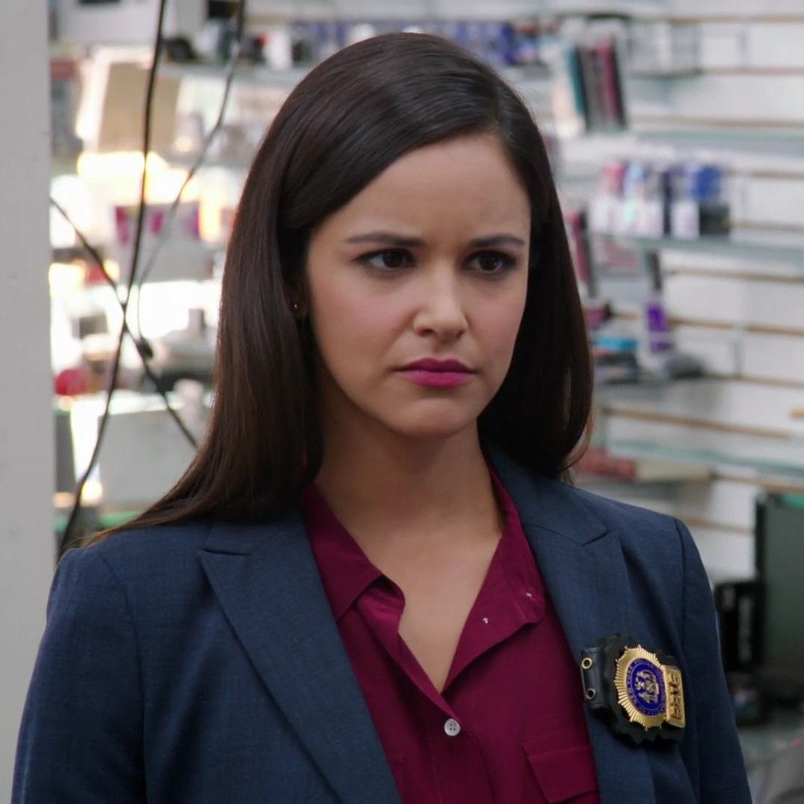

Hello World
This is a description of the world of movies that i have been part of.
List Of movies
- Brooklyn nine nine.
- The originals.
- Supergirl.
- Friends.
- The Big Bang theory
- Shadow Hunters.
- The cinderella story
The originals
The feeling of watching movies
Watching movies as you know it is a very fun leisure activity. Although to some people it may be considered costly or timewasting it is the best way to pass time and relax.
Slang brought out by most movies
Movies bring about slang either known to the characters in the movie or common abbreviation such as BRB
Best Characters in Movies
- Hope Mikaelson
- Klaus Mikaelson
- Marcel Geraild
- Amy Santiago
- Jake Peralta
- Charles Boyle
Roles of the characters
- Hope Mikaelson
- The daughter of an Klaus Mikaelson who struggles to survive as the only existing tribid while facing her own enemies and those of her father.
- Klaus Mikaelson
- An immortal hybrid whose focus is on protecting his daughter, his family and being the king of New Orleans.
- Amy Santiago
- A detective in the brooklyn nine nine precint whose ambition is to one day become the captain. 
The best time to watch movies is at night between and Those are about .
One may also take a whole day off to just watch movies, then they would need a timetable to direct them on how to divide the time to be able to watch the three movies.
| - | originals |
| - | Legacies |
| - | Brooklyn nine nine |
I would like to know more about you.
After reading this article the question that remains is, which was the 1st movie you liked?